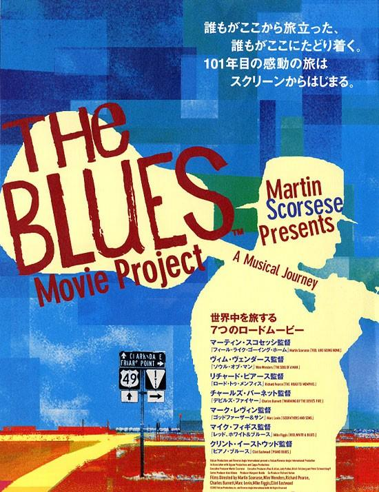

布鲁斯（又译蓝调(blues)，港台常译为“怨曲”）是一种基于五声音阶的声乐和乐器音乐，它的另一个特点是其特殊的和声。布鲁斯是南北战争后，在黑人民间产生的一种演唱形式，它与黑人的种植园歌曲（劳动时集体合唱的无伴奏歌曲）有着一脉相承的关系。布鲁斯起源于过去美国黑人奴隶的圣歌、赞美歌、劳动歌曲、叫喊和颂歌。布鲁斯中使用的“蓝调之音”和启应的演唱方式都显示了它的西非来源。
布鲁斯对后来美国和西方流行音乐 布鲁斯音阶有非常大的影响，拉格泰姆、爵士乐、大乐队、节奏布鲁斯、摇滚乐、乡村音乐和普通的流行歌曲，甚至现代的古典音乐中都含有布鲁斯的因素或者是从布鲁斯发展出来的。在诗歌里这个词常被用来描写忧郁情绪。
美国流行音乐形式。又译为蓝色音调。原意为在感情上悲伤的意思。在黑人歌曲中，有一大部分都是描写生离死别之情，抒发忧伤凄惨的内容，用布鲁斯一词来概括十分贴切，久用成习，就成了这一类黑人歌曲的总称，进而成为美国黑人音乐中一种典型的曲调。布鲁斯约产生于19世纪末，由非 洲被贩卖至美国南部庄园中做奴隶的黑人所哼唱的劳动歌曲、灵歌和田间号子结合而成。最初的布鲁斯基本上都是歌曲，伴奏只用吉他，后来逐渐加进了其他乐器，并出现了专供器乐演奏的布鲁斯。最知名的布鲁斯歌手是贝西・史密斯。第一个把布鲁斯写下来并交付出版的是W.C.汉迪，他有布鲁斯之王之称。
20世纪的20年代，Blues以它个性的歌词、和谐的节奏以及忧郁的旋律迎合了某些人而逐渐兴起。Blues音乐中包含了很多诗一样的语言，并且不断反复，然后以决定性的一行结束。旋律的进行以和弦为基础，以I 、IV、V级的3个和弦为主要和弦，12小节为一模式反复。旋律中，将主调上的第3、5、7级音降半音，使人有着苦乐参半、多愁善感的感觉冲击。
虽然Blues音乐中主唱是焦点，但是以吉他为主的乐器即兴演奏也非常精彩，乐器演奏者可以超越和弦的界限随意发挥，除了旋律的忧郁动听外，还包括小刀刮擦声和滑棒使用的声音，以及模仿主唱的哼唱声。在将Blues音乐流行化的过程中，Eric Clapton是一个成功的乐手和歌曲创作者，如果你没听过，那么现在就开始感受吧！
Blues音乐发展到今天，已经被纳入主流音乐的行列，它的许多元素被更多的运用到摇滚乐及流行音乐中。但是传统的Blues音乐还是有着强大的实力，这个领域的音乐家有B.B.King、John Lee Hooker、Etta Baker、Jimi Hendrix 、Junior Wells和Buddy Guy等等。 |